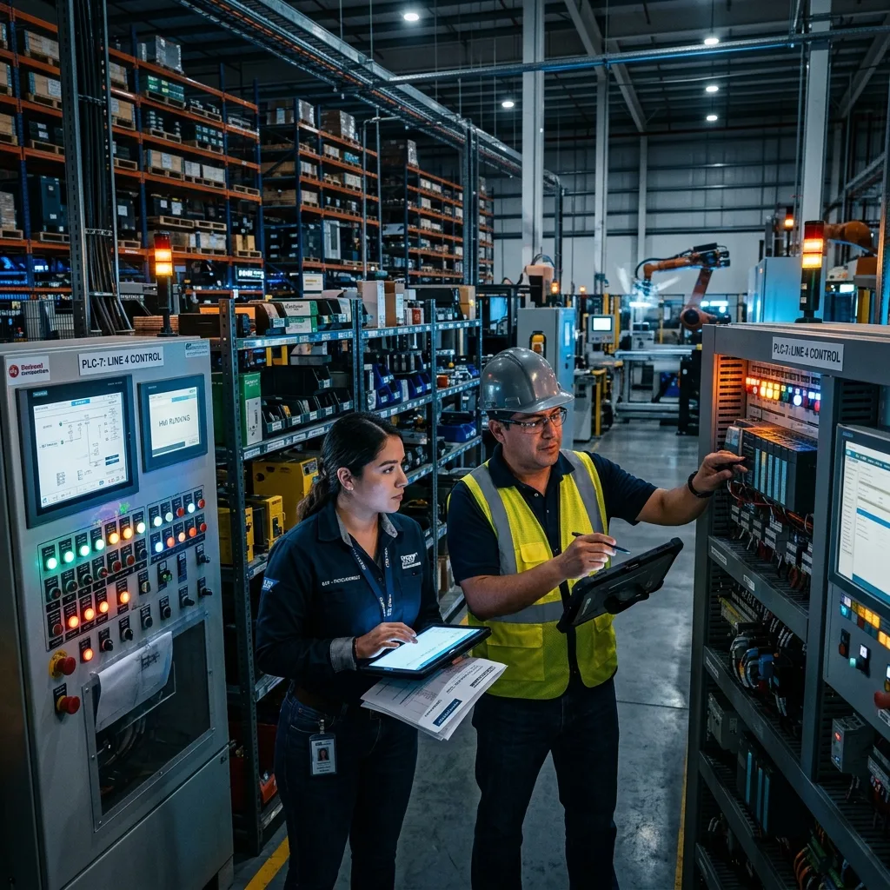

Guía Completa de Instalación de Maquinaria Industrial: Montaje Electromecánico, Conexión a PLC y Puesta en Marcha

La instalación de maquinaria industrial es uno de los hitos más críticos en la puesta en marcha o reubicación de líneas de producción en las plantas de Saltillo, Ramos Arizpe y Monterrey. Un montaje deficiente o una alineación imprecisa no solo provoca desgaste prematuro en componentes mecánicos, sino que puede derivar en fallas de comunicación en el PLC o micro-paros continuos.
💡 ¿En qué consiste una instalación industrial completa?
Abarca 5 fases indispensables: 1) Preparación de área y maniobra (Rigging), 2) Montaje mecánico y alineación de precisión, 3) Canalización e interconexión eléctrica/control (480V / 24VDC), 4) Conexión de servicios neumáticos e hidráulicos, y 5) Pruebas I/O, comisionamiento con PLC y validación de pieza OK.
1. Rigging, Desembalaje y Posicionamiento Seguro
El proceso inicia con la evaluación estructural del suelo industrial (resistencia de la loza de concreto) y el plan de maniobras de carga. El equipo de maniobristas e ingenieros utiliza grúas industriales, tortugas de carga y gatos hidráulicos sincronizados para desembalar e ingresar los equipos a la nave sin afectar la operación de líneas adyacentes.
2. Montaje Mecánico, Nivelación y Alineación de Precisión
Una máquina mal nivelada transmite vibraciones destructivas a los reductores y ejes de los servomotores. Mediante niveles de precisión ópticos y sistemas de alineación láser, se ajustan los puntos de apoyo, se fijan calzas antivibratorias y se realiza el anclaje químico o mecánico conforme a la norma del fabricante.
3. Interconexión Eléctrica, Redes y Tableros de Control
En esta etapa se conectan los suministros de energía y señales de control:
- Alimentación de Potencia (480VAC / 220VAC): Canalizaciones con tubería conduit galvanizada o charola tipo escalerilla hacia el interruptor principal.
- Cableado de Sensores y Actuadores (24VDC): Conexión de islas de válvulas, cortinas de seguridad, encoders y botones a los módulos de E/S remotas.
- Redes Industriales: Tendido de cableado blindado Ethernet industrial (Cat6A / M12 D-coded) para redes Profinet o EtherNet/IP deterministas.
4. Conexión a Servicios Industriales (Aire Comprimido, Agua y Gas)
Los actuadores neumáticos y herramientas robóticas requieren suministro constante de aire seco filtrado a 6 bar. Se instalan unidades FRL (Filtro-Regulador-Lubricador), colectores de drenaje y tubería de aluminio o acero inoxidable garantizando cero fugas.
5. Comisionamiento, Prueba de I/O y Validación en Planta
FASE CRÍTICA DE AUTOMATIZACIÓN: Antes de energizar servomotores o arrancar la secuencia automática, se realiza la Verificación Punto a Punto (I/O Check) forzando señales desde el PLC (Allen-Bradley / Siemens), se prueban los paros de emergencia (E-Stop) y se valida la primera pieza producida en modo manual/semi-automático.
⚡ Robologix Automation: Tu Aliado en Instalación de Maquinaria
En Robologix Automation nos encargamos del proyecto completo: desde las maniobras de montaje y conexiones electromecánicas hasta la programación del PLC y la puesta en marcha en Saltillo, Ramos Arizpe y Coahuila.
¿Planeas instalar nueva maquinaria o reubicar una línea de producción?
Solicita un levantamiento técnico sin costo con nuestro equipo especializado en Coahuila.
Chat Directo con un Ingeniero (+52 844 455 1869)